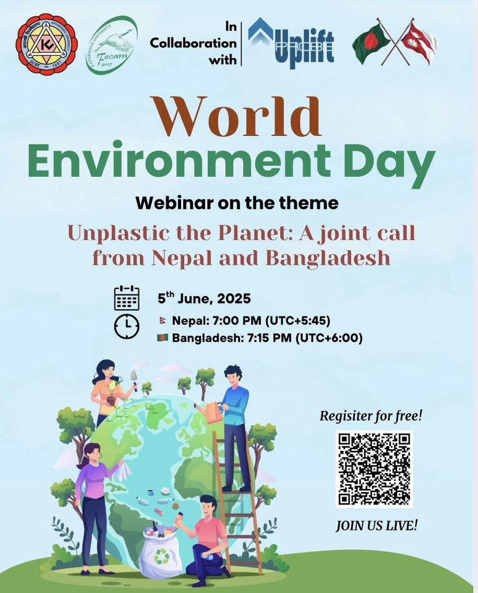
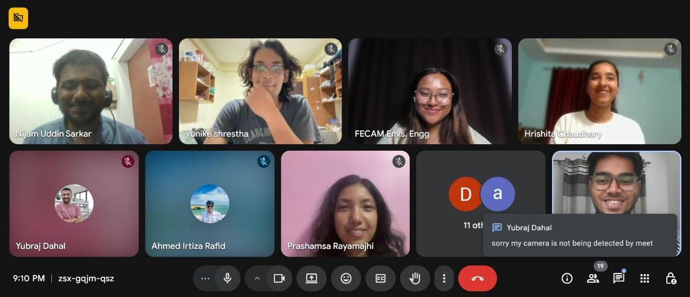
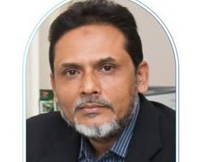
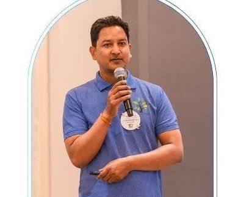
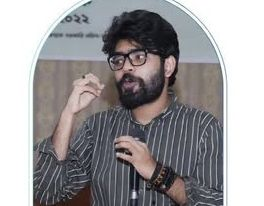

Workshop 1.0: Fundamentals of research
Facilitated by Mohammed Fahim Murshed
An introduction to the world of research for our research associates, setting the base for the work ahead.
Training for our research associates, sessions in schools, and joint events with partners.
An online series that takes new associates from first principles to working methods.
Facilitated by Mohammed Fahim Murshed
An introduction to the world of research for our research associates, setting the base for the work ahead.
Facilitated by Mohammed Fahim Murshed
How PRISMA diagrams are used in systematic reviews to show, transparently, how studies were identified, screened and included.
Facilitated by Hasibul Hasan Hasib
The fundamentals of literature review: how to identify, analyze and synthesize existing studies in a systematic way.
Hazard awareness sessions with school students in Dhaka.
An interactive session with school students on waterlogging, earthquake preparedness, fire incidents and building collapse. We shared practical advice and learned from the students’ own experiences. It was heartening to see how much they already knew.
The same session at Orchid International School. Comparing the two schools showed how socio-economic background shapes children’s experiences, their sense of risk and how prepared they are.
A joint call from Nepal and Bangladesh, held with FECAM on World Environment Day, 5 June 2025.

Youth voices from both countries came together online to talk about plastic pollution across borders. The session was hosted by Ahmed Irtiza Rafid (University of Dhaka) and Hrishita Chaudhary (Kathmandu University).
Our thanks to everyone who joined, shared and made the webinar a success.


Works in human geography, environmental risk assessment and climate change adaptation. Executive Member of the National Environmental Committee and a long-time collaborator with UNICEF.

Executive Director of Clean Up Nepal and founder of Safa Nepal, with over 18 years of work in waste management, WASH and plastic pollution.

Lecturer, Department of Environmental Science and Management, North South University. M.Sc. in Economic Development (University of Glasgow), B.S.S. in Economics (University of Dhaka).